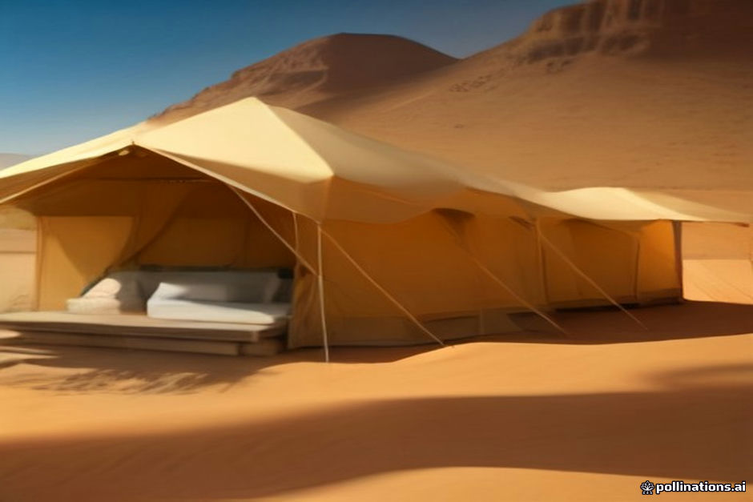

When planning a Sahara trip, one of the first logistical forks in the road is accommodation style. You can stay in an auberge (hotel) built right on the hardpan edge where the paved road ends and the sand begins, or you can venture deeper into the dunes to a tented camp.
Neither choice is objectively superior, but they offer entirely different experiences. The right fit depends on your sleep preferences, tolerance for logistics, and what you actually want to see when you open your eyes at sunrise.
The Edge-of-Dunes Hotel Experience
Hotels like Auberge du Sud or Kasbah Ali el Youssef sit right at the transition zone. You arrive by car, drop your bags in a permanent room with stone walls, air conditioning, and reliable plumbing, and step out onto the sand.
The main advantage here is infrastructure. You get consistent water pressure, standard electrical outlets for charging gear, and often a swimming pool. If you are traveling with elderly parents or very young children, or if you simply hate the idea of sharing sand with your sleeping arrangements, an edge hotel removes friction.
- Direct vehicle access (no camel trek or 4x4 transfer required)
- Solid walls and reliable air conditioning or heating
- Swimming pools are common, especially useful in shoulder seasons
The Deep-Dune Luxury Camp Experience
Luxury camps sit miles out into the Erg Chebbi sea of sand. Getting there requires either a 4x4 transfer over rough tracks or a camel trek. Once you arrive, you stay in heavy canvas tents equipped with real beds, en-suite flush toilets, and warm showers.
The trade-off is isolation and atmosphere. You trade the quiet hum of an air conditioner for absolute silence and an unobstructed view of the night sky without light pollution from Merzouga village. Stepping outside your tent flap puts you immediately on top of a giant dune.
- Total immersion in the dunes away from village lights
- En-suite private bathrooms inside canvas-walled structures
- Evenings centered around the campfire and Berber percussion
Logistics, Comfort, and Trade-Offs
It is worth being honest about what 'luxury camp' means in the Sahara. While high-tier camps feature plush carpets, lanterns, and hot water, you are still operating on solar or generator power. Wi-Fi can be spotty, and water is trucked in, meaning conservation matters. Read our cell service and wifi guide for connectivity expectations.
Hotels offer predictability. If you rely on heavy CPAP machines or constant climate control, hotels make that easier, though some camps can accommodate medical gear if notified in advance—check our CPAP and electronics guide before booking.
- Camps rely on generators and solar arrays; power may shut off late at night
- Hotels offer standard hotel amenities with zero generator downtime
- Camps require luggage coordination; pack a smaller bag per our luggage storage guide
Which One Should You Choose?
If your primary goal is to wake up surrounded by towering sand dunes with absolute quiet, book the desert camp. It is the defining Sahara experience that justifies the long drive from Marrakesh or Fes. You can review our camp tier comparison to see what different price points include.
If you view the desert as a landscape to visit during the day rather than sleep in, or if you value strong Wi-Fi, constant AC, and easy luggage access above all else, stay at an edge-of-dunes hotel. Many travelers split the difference by doing one night in a camp and a second night in a hotel.
- Choose a camp for the classic dune-surrounded night and stargazing
- Choose a hotel for maximum physical comfort and easy electrical access
| Feature | Desert Camp | Edge-of-Dunes Hotel |
|---|---|---|
| Location | Deep in the Erg Chebbi dunes | At the transition line where road meets sand |
| Arrival | 4x4 transfer or camel trek | Direct drive-up access |
| Bathrooms | Private en-suite (tent with plumbed toilet/shower) | Standard tiled hotel bathroom |
| Power & AC | Solar/generator-fed; limited overnight | Constant grid electricity and AC |
| Atmosphere | Remote, silent, campfire-focused | Resort-style, pool access, village proximity |

Illustration, not a photograph — for the real thing, you'll have to stand on the ridge yourself.
Quick answers
A few follow-up questions travelers ask about this.
Can I drive my rental car to a luxury desert camp?
No. Standard rental cars cannot navigate soft sand. You must leave rental vehicles in a secure parking lot in Merzouga or at the edge hotel, and take the operator's 4x4 or camels into the camp.
Do luxury camps have hot showers?
Yes, high-tier and luxury desert camps feature private en-suite bathrooms with hot water showers and flush toilets, powered by solar or gas heaters.
Is it possible to visit a desert camp for dinner without staying overnight?
Most camps are too far out for casual drop-ins, but edge-of-dunes hotels often allow non-residents to use their restaurants or pools for a small fee.
Planning your own route?
Tell us your dates and what matters to you — we'll answer with a straight recommendation, not a brochure.
Send an inquiry See the itineraries